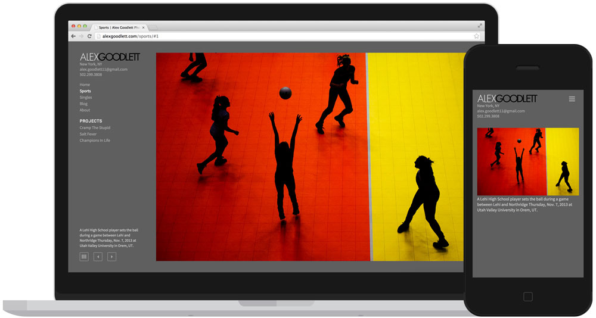

Built with the specific needs of photojournalists in mind, SoloFolio makes it easy to create the perfect WordPress portfolio & blog.
Features
- Retina-friendly, fully responsive galleries
- Images are never cropped, captions are always visible
- No-compromises experience for mobile/tablet users
- Custom widgets for dropdown menus and social media icons
- Works on screens of all sizes from 3" to 30"
- Compatible with WooCommerce eCommerce Toolkit
- Integrates with Photoshelter BEAM Element template
- Loads real-time location from Blink
Examples
- Matt Eich / Norfolk, VA
- Harry Engels / London, UK
- Joshua Lindsey / Nashville, Tenn.
- Gabe Souza / Portland, Maine
- Joel Hawksley / Providence, R.I.
- Jordan Stead / Seattle, Wash.
- Jared Wickerham / Pittsburgh, P.A.